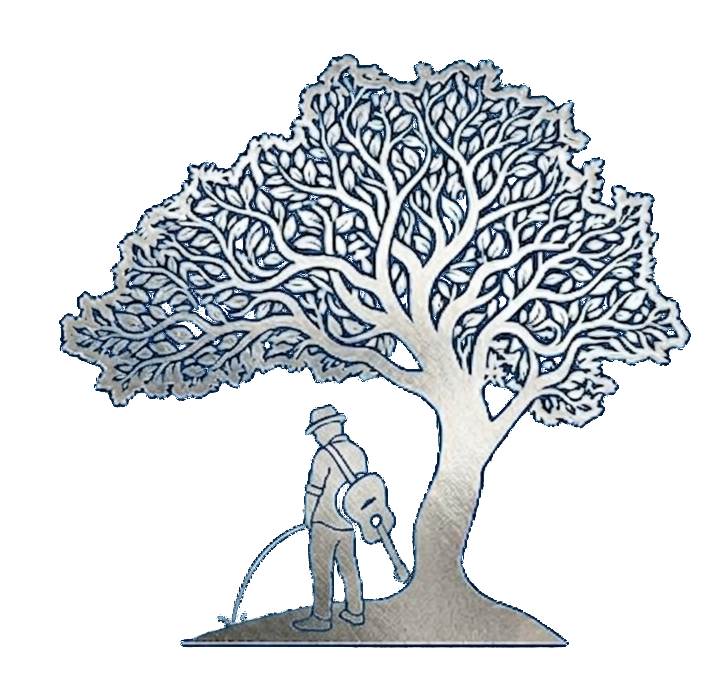

Piosenki, setlisty, chwyty i ustawienia nigdy nie opuszczają Twojego urządzenia, więc nie ma czego od nas odzyskiwać. Konto u mnie masz tylko wtedy, gdy założyłeś je do wspólnego śpiewania: adresem e-mail z hasłem albo kontem Google. Rozstanie jest bezbolesne i nie trzeba przy nim tłumaczyć, że to nie my, tylko Ty.
Wspólne śpiewanie, Ustawienia konta, Usuń konto. Aplikacja poprosi jeszcze o hasło (albo o przepisanie adresu e-mail, jeśli logujesz się przez Google), żeby nikt nie zrobił tego za Ciebie dla żartu. Potem konto znika od razu, bez okresu wypowiedzenia i bez ankiety, dlaczego odchodzisz.
Telefon utopiony w jeziorze, aplikacja odinstalowana w przypływie złości na chwyt F? Napisz z adresu przypisanego do konta na songbook@sonnekern.pl, w tytule: Usunięcie konta - [Twój nick lub e-mail]. Usunę konto w ciągu 14 dni roboczych i odpiszę, że po sprawie. Tą samą drogą poprosisz o skasowanie zgłoszonych błędów albo zaproponowanych chwytów.
| Dane | Gdzie leżą | Co się z nimi dzieje |
|---|---|---|
| Adres e-mail, hasło, nick, zdjęcie profilowe | mój serwer | znikają razem z kontem, a nick wraca do puli |
| Wydarzenia, które organizowałeś, i Twoje zapisy na cudze | mój serwer | znikają razem z kontem |
| Zgłoszenia błędów i pomysłów | mój serwer | na prośbę mailem |
| Zaproponowane chwyty | mój serwer | na prośbę mailem; chwyt już zatwierdzony zostaje w bazie, ale bez śladu po Tobie |
| Piosenki, setlisty, chwyty, ustawienia | Twoje urządzenie | znikają przy odinstalowaniu |
| Kopia zapasowa i biblioteka dla znajomych | Twój Dysk Google | usuwasz sam (punkt 5) |
Do Twojego Dysku nie mam dostępu, więc tu musisz zakasać rękawy sam. Jeśli korzystałeś z kopii zapasowej albo biblioteki dla znajomych, skasuj folder Bacca_SongBook na Dysku Google, a aplikacji odbierz klucze na myaccount.google.com/permissions.
Tylko statystyka spotkań wspólnego śpiewania: kod sesji, nazwa wydarzenia, czas trwania, liczba uczestników i lista zagranych tytułów. Nikogo w niej nie ma z imienia ani nicku, jest za to dowód, że „Bieszczadzkie anioły” padły trzeci raz w ciągu wieczoru.
Pytania, wątpliwości, pożegnalne piosenki: songbook@sonnekern.pl